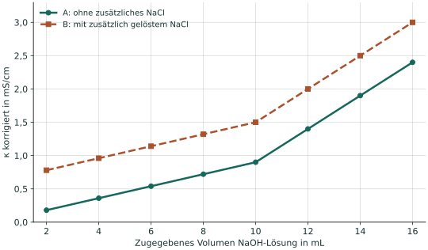

Zwei Essigsäureproben
Probe A und Probe B enthalten jeweils 20,0 mL einer Essigsäurelösung mit gleicher Säurestoffmenge. In B ist zusätzlich NaCl gelöst. Das Probenvolumen beträgt auch dort 20,0 mL. Beide Titrationen werden mit NaOH-Lösung der Konzentration 0,0200 mol/L ausgewertet; die Temperatur ist gleich.
Das Diagramm zeigt idealisierte, bereits volumenbereinigte Kurvenäste. Die Ionenbeweglichkeiten gelten im Modell als konstant; zusätzliche Wechselwirkungen werden vernachlässigt. Der Anfangsbereich bis 2 mL und die Abrundung am Übergang werden nicht modelliert.


| V(NaOH) in mL | κkorr(A) in mS/cm | κkorr(B) in mS/cm |
|---|---|---|
| 2 | 0,18 | 0,78 |
| 4 | 0,36 | 0,96 |
| 6 | 0,54 | 1,14 |
| 8 | 0,72 | 1,32 |
| 10 | 0,90 | 1,50 |
| 12 | 1,40 | 2,00 |
| 14 | 1,90 | 2,50 |
| 16 | 2,40 | 3,00 |
κkorr = κ · (V₀ + V)/V₀ mit V₀ = 20,0 mL. Die Korrektur rechnet die Verdünnung durch die zugesetzte Maßlösung näherungsweise heraus. Hintergründe: 4.2 Volumenkorrektur.
A · Kurven vergleichen
Mehr Leitfähigkeit – mehr Säure?
- Beschreibe zwei Gemeinsamkeiten und einen Unterschied der Kurven.
- Erkläre den Unterschied auf Teilchenebene. Ordne dabei Na⁺ und Cl⁻ aus dem zugesetzten NaCl ein.
- Bestimme für beide Proben das Äquivalenzvolumen aus dem Kurvenmodell und berechne die Essigsäurekonzentration. Formuliere eine Aussage zum Einfluss der NaCl-Beimischung.
A · Hilfe 1: Zwei Achsen, zwei Aussagen
Die y-Achse beschreibt einen Leitfähigkeitswert. Auf welcher Achse liest du die Menge der verbrauchten Maßlösung ab? Prüfe, ob eine Verschiebung nach oben auch eine Verschiebung nach rechts bedeutet.
A · Hilfe 2: Reaktion und Rechnung
Nutze CH₃COOH + OH⁻ → CH₃COO⁻ + H₂O. Welche Teilchen werden dabei verbraucht? Für die Rechnung gilt das Stoffmengenverhältnis 1 : 1 und c(Essigsäure) = c(NaOH) · VE/VProbe.
A · Musterlösung und Selbstkontrolle
Beide Kurven steigen vor dem Übergang mäßig und danach stärker an. Sie ändern ihre Steigung bei demselben Volumen. Kurve B liegt im Modell jeweils um 0,60 mS/cm höher.
Das zusätzlich gelöste NaCl liefert bewegliche Na⁺- und Cl⁻-Ionen. Beide tragen zur Leitfähigkeit bei. Sie werden bei der Neutralisation der Essigsäure nicht verbraucht und benötigen kein zusätzliches OH⁻. Sie sind hier Begleitionen. Das vorhandene Na⁺ ist vom weiteren Na⁺ zu unterscheiden, das mit der Maßlösung hinzukommt.
Für beide Proben ergibt sich VE = 10,0 mL. Damit gilt jeweils:
= 0,000200 mol = 0,200 mmol
c(CH₃COOH) = 0,000200 mol / 0,0200 L
= 0,0100 mol/L
Die NaCl-Beimischung erhöht den Leitfähigkeitshintergrund, verändert im Modell aber weder den stöchiometrischen NaOH-Verbrauch noch den ermittelten Säuregehalt. Eine hohe Leitfähigkeit allein belegt keinen hohen Essigsäuregehalt.
Hast du Kurvenhöhe, Äquivalenzvolumen und Säurekonzentration getrennt beurteilt?
B · Aussage prüfen
Was darf man verallgemeinern?
„Begleitionen haben keinerlei Einfluss auf die Analyse. Mit NaCl bleibt jede Titrationskurve einfach um einen festen Betrag nach oben verschoben.“
Beurteile beide Sätze. Unterscheide dabei das vorliegende Kurvenmodell von einer Auswertung nicht korrigierter Messwerte und von realen Proben.
B · Hilfe 1: Das Modell lesen
Welche Annahmen stehen vor dem Diagramm? Was passiert mit der Konzentration bereits vorhandener Ionen, wenn während der Titration das Gesamtvolumen wächst?
B · Hilfe 2: Verbrauch und Ablesbarkeit trennen
Ein unveränderter stöchiometrischer Verbrauch sagt noch nicht, wie klar sich zwei Kurvenäste unterscheiden lassen. Prüfe, ob das zusätzliche Signal die Auswertung unter allen Messbedingungen gleich leicht macht.
B · Musterlösung
„Keinerlei Einfluss“ ist zu weitgehend. NaCl verbraucht in diesem Beispiel kein OH⁻, beeinflusst aber das Leitfähigkeitssignal. Ein höherer Hintergrund kann je nach Signalstreuung, Messauflösung und Skalierung die Bestimmung des Schnittpunkts erschweren. Aus einem unveränderten chemischen Äquivalenzpunkt folgt daher keine unveränderte Ableseunsicherheit.
Die feste Verschiebung gilt hier für das volumenbereinigte Modell. In nicht korrigierten Werten nimmt der Beitrag derselben NaCl-Stoffmenge mit wachsendem Gesamtvolumen ab. Der Abstand wäre im Modell 0,60 · 20,0/(20,0 + V) mS/cm, also beispielsweise 0,40 mS/cm bei V = 10,0 mL.
In realen Lösungen können zudem Ionenwechselwirkungen die Beweglichkeiten und Gleichgewichte beeinflussen. Deshalb sind exakt parallele Kurven keine allgemeine Garantie. Unter den angegebenen Bedingungen bleibt die benötigte OH⁻-Stoffmenge aber durch die Säurestoffmenge bestimmt.
Zurück zur Checkliste
Kannst du erklären, weshalb Begleitionen ein Signal verändern können, obwohl sie die Maßlösung nicht verbrauchen? Prüfe das an den beiden Kurven.
Fachliche Quellen und Modellgrenzen
- Tel Aviv University, Lehrmaterial Conductometric Titrations: Volumenkorrektur und Verhalten schwacher Säuren bei der Titration mit starker Base.
- OpenStax, Chemistry 2e: Quantitative Chemical Analysis: stöchiometrische Auswertung von Titrationen.
Die konstante Verschiebung ist eine Folgerung aus dem hier angegebenen verdünnten Modell mit additiven Ionenbeiträgen und Volumenkorrektur. Sie ist kein allgemeines Gesetz für unbereinigte Messkurven.
Aufgaben, Zahlenbeispiele, Diagramme und Musterlösungen wurden für dieses Lernangebot entwickelt. Die Datensätze sind didaktische Modelle, keine Versuchsmessungen.